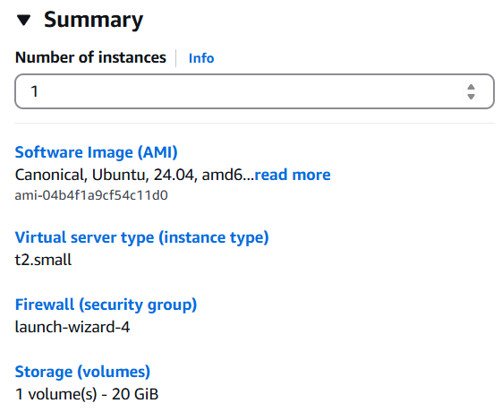
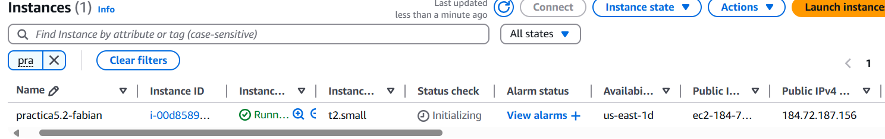
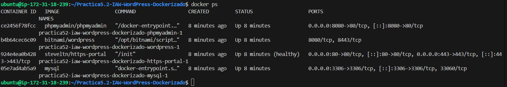
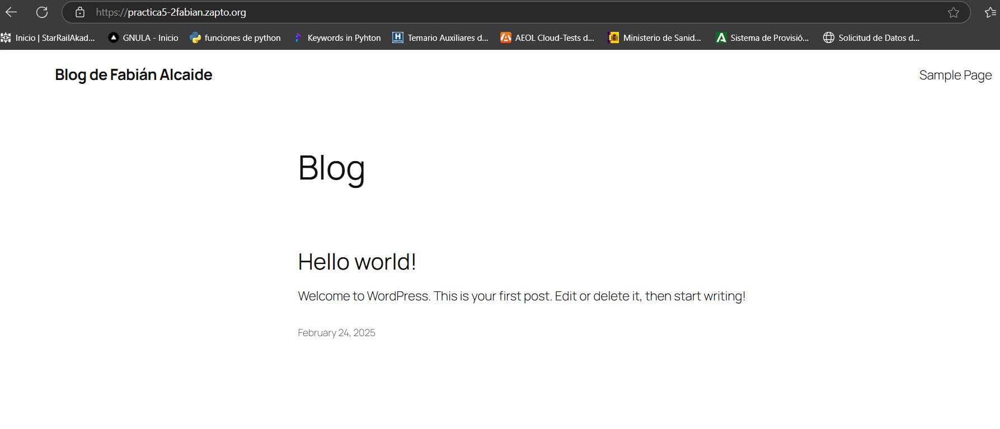
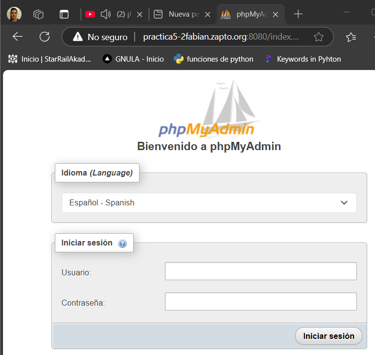

Practica5.2-IAW-WordPress-Dockerizado#
Despliegue de WordPress con Docker y Docker Compose
Explicación de la práctica#
Para la siguiente práctica vamos a crear una estructura de back y front de wordpress, junto a una máquina que realiza los retos de Let's Encrypt, todo ello mediante aplicaciones contenedorizados, siguiendo la siguiente estructura:

Para ello vamos a desarrollar un documento docker-compose.yml donde se especifican las máquinas que se van a crear.
Comandos a usar con docker-compose#
docker ps: Ver los contenedores activas.
docker compose up -d: Lanza las instrucciones que se encuentran en el docker-compose.yml.
docker compose down -v: Destruye todos los contenedores junto a volumenes, dependencias y redes.
docker logs: Muestra los logs del contenedor que pongamos.
docker images: Ver las imágenes que nos hemos descargados de contenedores.
docker system events: Ver los eventos del sistema en docker.
Desarrollo de la práctica#
Primero tendremos una instancia limpia para poder trabajar con las siguientes características.

Luego obtenemos una ip elástica para nuestra instancia.

Para ello vamos a tirar primero el script install_docker.sh, con ello aseguramos la descarga de docker-compose de último modelo.
Una vez tenemos el sistema preparado elaboramos la siguiente hoja:
- Creación de servicio mysql
services:
mysql:
image: mysql
ports:
- 3306:3306
environment:
- MYSQL_ROOT_PASSWORD=${WORDPRESS_DATABASE_PASSWORD}
- MYSQL_DATABASE=${WORDPRESS_DATABASE_NAME}
- MYSQL_USER=${WORDPRESS_DATABASE_USER}
- MYSQL_PASSWORD=${WORDPRESS_DATABASE_PASSWORD}
volumes:
- mysql_data:/var/lib/mysql
networks:
- backend-network
restart: always
phpmyadmin:
image: phpmyadmin/phpmyadmin
ports:
- 8080:80
environment:
- PMA_HOST=mysql
networks:
- backend-network
- frontend-network
restart: always
depends_on:
- mysql
wordpress:
image: bitnami/wordpress
environment:
- WORDPRESS_DATABASE_HOST=${WORDPRESS_DATABASE_HOST}
- WORDPRESS_DATABASE_USER=${WORDPRESS_DATABASE_USER}
- WORDPRESS_DATABASE_PASSWORD=${WORDPRESS_PASSWORD}
- WORDPRESS_DATABASE_NAME=${WORDPRESS_DATABASE_NAME}
- WORDPRESS_BLOG_NAME=${WORDPRESS_BLOG_NAME}
- WORDPRESS_USERNAME=${WORDPRESS_USERNAME}
- WORDPRESS_PASSWORD=${WORDPRESS_PASSWORD}
- WORDPRESS_EMAIL=${WORDPRESS_EMAIL}
volumes:
- wordpress_data:/bitnami/wordpress
depends_on:
- mysql
restart: always
networks:
- frontend-network
- backend-network
https-portal:
image: steveltn/https-portal
ports:
- 80:80
- 443:443
restart: always
environment:
DOMAINS: "${DOMAIN} -> http://wordpress:8080"
STAGE: 'production' # Don't use production until staging works
# FORCE_RENEW: 'true'
networks:
- frontend-network
volumes:
mysql_data:
wordpress_data:
networks:
backend-network:
frontend-network:
Una vez elaborado el documento, lo lanzamos y vemos que se crear tanto el volumen, las redes y los contenedores.

Y finalmente todo irá funcionando poco a poco, cuando los puertos estén bien conformado, el port-forwarding funciona, accedemos a la url.

Y phpmyadmin.

Enlaces#
-
Enlace del blog: https://practica5-2fabian.zapto.org/
-
Enlace a phpmyadmin: https://practica5-2fabian.zapto.org:8080